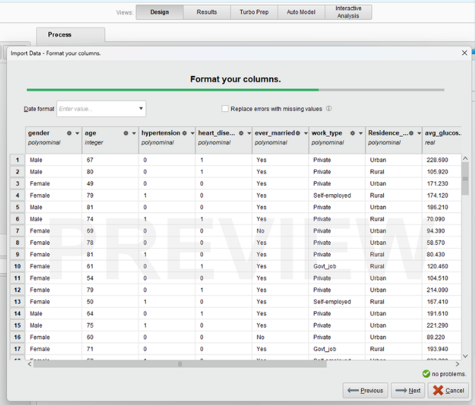
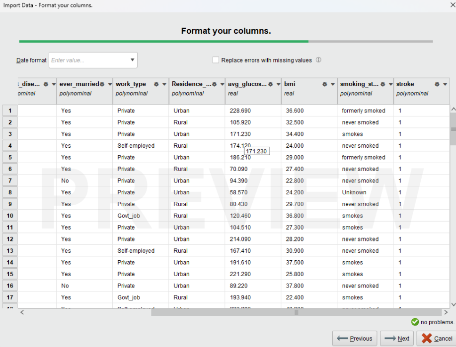
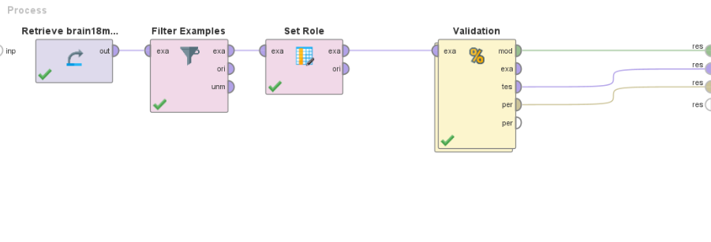
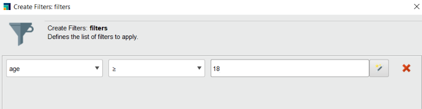
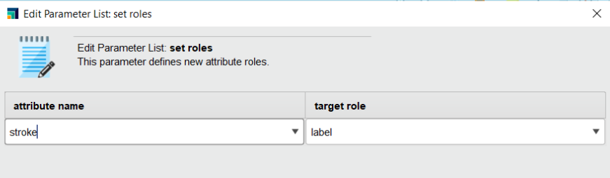
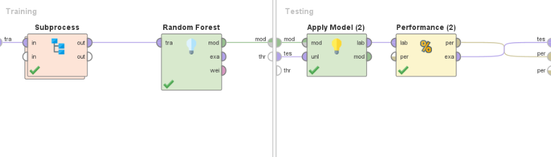
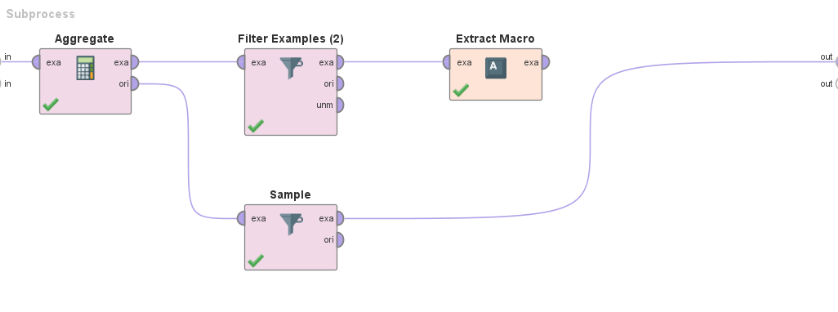
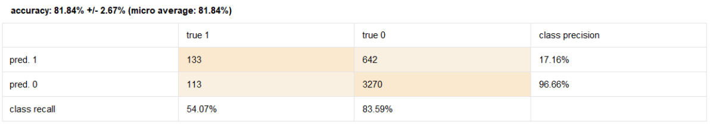

This is the project in Business Data Analytics Course (May 2024)
To understand how RapidMiner works and to understand how prediction works based on operators by using Brain Stroke dataset, it is also know how to work each operator. And the dataset used as a model in this project comes from the Kaggle website.
I import CSV file and change type some columns to Polynomial
 I use Random Forest Model To find 1 model with the most suitable accuracy value. For this model have 4 operators
- Retrieve is a dataset
- Filter Examples is filter data that want to know anyone who has had a brain stroke over 18 years of age
- Set Role is when I want to predict something I will change role to label to prediction for this project I want to prediction stroke then I changed Stroke to label
-Validation is show Training(Subprocess and Random Forest) and Testing(Apply Model and Performance)
In Subprocess have 4 operators
-Aggregate: Select Stroke attribute and change aggregation function to count
-Fillter Examples: change Stroke equals 1
-Sample: Class 1(has stroke) change size to 222 and Class 0(hasn't stroke) change size to 400 to sampling data
-Extract Macro: macro type is data_value, arrtibute name is count(stroke)
accuracy value is 81.84% The class values are suitable for the brain stroke dataset and doing this project helps to know the relationship between each operator and practice modeling without coding. It is another good choice and is considered to be a new experience, including the experience of the RapidMiner program.And I have studied and researched the dataset by myself. I have practiced data research, found reliable and appropriate data that is not illegal and can be used to further develop the project.
